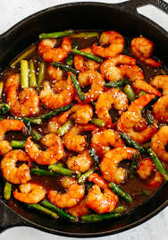

Honey Garlic Shrimp Stir-Fry

Description
A savory and sweet stir-fry featuring tender shrimp glazed in a sticky
honey garlic sauce. This dish is quick to make and bursting with flavors
that the whole family will love.
Ingredients
- 1 lb (450g) shrimp, peeled and deveined
- 3 tablespoons honey
- 2 tablespoons soy sauce
- 2 cloves garlic, minced
- 1 tablespoon vegetable oil
Steps
-
In a bowl, combine shrimp with honey and soy sauce. Let marinate for
10-15 minutes.
-
Heat vegetable oil in a skillet over medium-high heat. Add minced garlic
and cook until fragrant, about 1 minute. Add shrimp along with the
marinade. Stir-fry until shrimp are pink and cooked through, about 3-4
minutes.
-
Remove shrimp from skillet. Bring remaining sauce to a simmer until
thickened slightly, about 1-2 minutes.
-
Return shrimp to the skillet, coating them in the thickened sauce. Stir
well to combine.
-
late the shrimp stir-fry over steamed rice or noodles. Garnish with
chopped green onions or sesame seeds if desired. Enjoy your Honey Garlic
Shrimp Stir-Fry!
Home